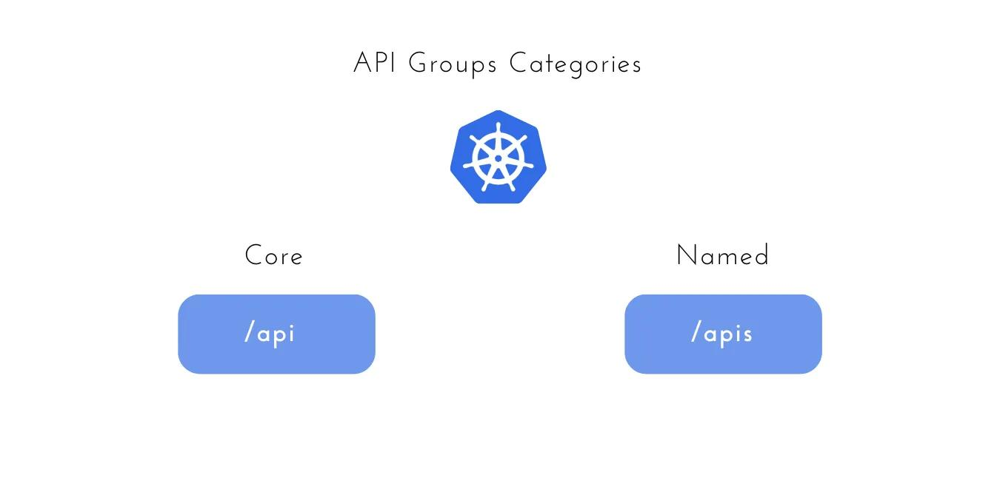
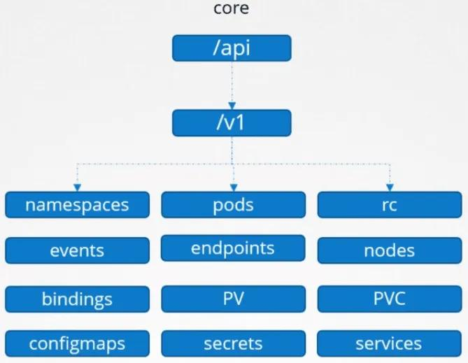
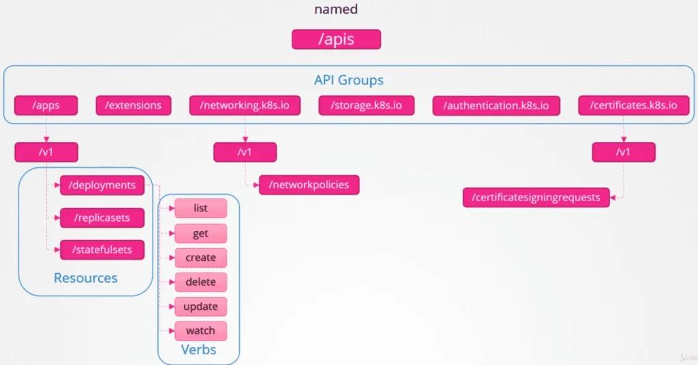
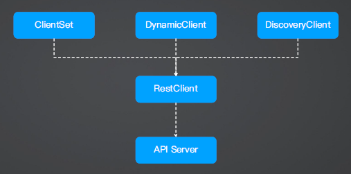
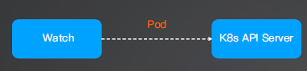
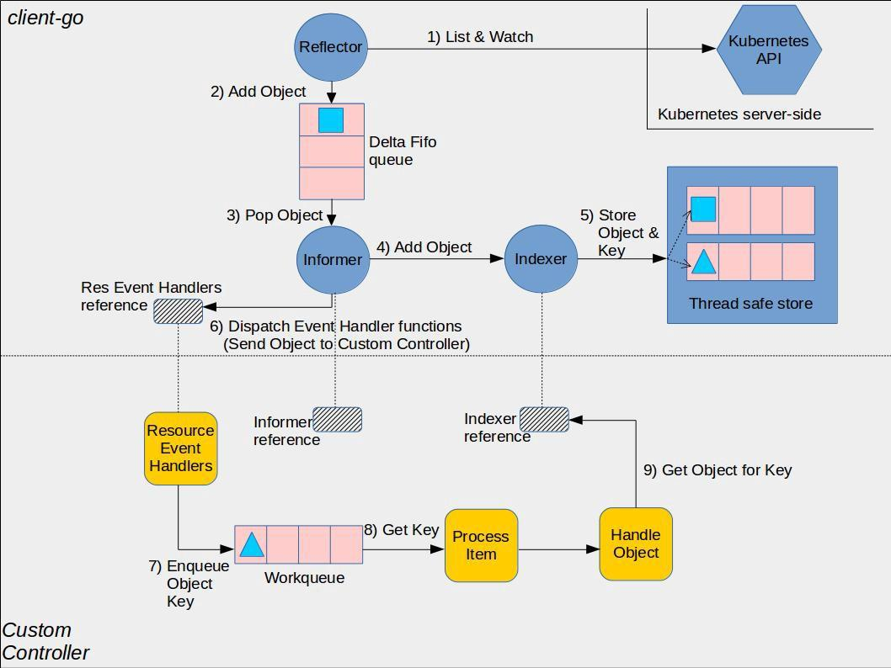

Client-go
Client-go 简介
什么是 Client-go？
Client-go 是 Kubernetes 官方提供的 Go 语言的客户端库， 使用该库可以访问 Kubernetes API Server，实现对 Kubernetes 资源（包括 CRD）的增删改查操作。
Kubernetes API Group
K8s API 分为核心 API（Core） 和命名 API 组（named），对资源的增删改查可以理解为是对 K8s API 的请求
Client-go 封装了请求 API 所需的鉴权、请求参数以及将返回 JSON 转化为 Go 结构体（Unmarshaling）

Kubernetes Core API
包括 namespace、 service、pods、nodes、configmap、secrets、pv 等对象

Kubernetes Named API Groups
包括 apps/v1/deployments、 apps/v1/replicasets 等对象

验证 K8s API 请求
获取 namespaces(core API)：https://127.0.0.1:56025/api/v1/namespaces?limit=500
% kubectl get ns -v6
I0117 22:36:27.288963 90078 loader.go:395] Config loaded from file: /Users/keti/.kube/config
I0117 22:36:27.311197 90078 round_trippers.go:553] GET https://127.0.0.1:56025/api/v1/namespaces?limit=500 200 OK in 14 milliseconds
NAME STATUS AGE
default Active 38s
kube-node-lease Active 38s
kube-public Active 38s
kube-system Active 38s
local-path-storage Active 35s
获取 deployment(named API)：https://127.0.0.1:56025/apis/apps/v1/namespaces/default/deployments?limit=500
% kubectl get deployment -v6
I0117 22:38:24.330110 90146 loader.go:395] Config loaded from file: /Users/keti/.kube/config
I0117 22:38:24.349347 90146 round_trippers.go:553] GET https://127.0.0.1:56025/apis/apps/v1/namespaces/default/deployments?limit=500 200 OK in 14 milliseconds
No resources found in default namespace.
理解 GVK 和 GVR
在Kubernetes中，GVK和GVR是两个重要的概念，用于唯一标识和操作不同的资源类型和实例。
GVK（Group Version Kind）
-
定义：GVK由Group、Version和Kind三个部分组成。
- Group：API组的名称。例如，“apps”组包含Deployment资源，“batch”组包含Job资源。核心组的资源（如Pod、Service等）没有组名，默认使用空字符串。
- Version：资源的版本，例如“v1”、“v1beta1”等。
- Kind：资源的种类，通常是单数形式。例如，Pod、Deployment、Service等。
- 例如 ：{Group: "apps", Version: "v1", Kind: "Deployment"}
-
特点：GVK用于唯一标识Kubernetes中的某种资源类型，特别是在描述资源的元数据和处理特定类型的资源时使用。
-
应用场景：
- 资源定义和描述：使用GVK在代码中定义和描述特定类型的资源。例如，定义一个Unstructured对象并设置其GVK。
- 资源转换和处理：使用GVK在不同版本的API之间进行资源转换和处理。例如，在控制器或操作器中，根据资源的GVK进行特定处理。
- 元数据操作：使用GVK操作资源的元数据，例如通过GVK获取资源的schema或进行元数据验证。
GVR（Group Version Resource）
-
定义：GVR由Group、Version和Resource三个部分组成。
- Group：API组的名称。与GVK中的Group相同。
- Version：资源的版本。与GVK中的Version相同。
- Resource：资源的名称，通常是复数形式。例如，Pods的资源名称是“pods”，Deployments的资源名称是“deployments”。
-
特点：GVR用于唯一标识Kubernetes中的某种资源类型，特别是在动态客户端和操作工具中，以便精确指定和访问资源。
-
应用场景：
- 动态客户端操作：使用GVR在动态客户端中进行CRUD（创建、读取、更新、删除）操作。例如，通过动态客户端获取一个特定命名空间中的所有Deployments。
- 资源操作工具：使用GVR开发操作Kubernetes资源的工具，例如kubectl插件。
-
GVR：Group、Version、Resource
- {Group: "apps", Version: "v1", Resource: "deployments"}
apiVersion: apps/v1
kind: Deployment
metadata:
name: nginx-deploymnt
labels:
app: nginx
每个资源的 GVK 都可以转换成对应的 Rest API 请求（GVR）。
https://127.0.0.1:56025/apis/apps/v1/namespaces/default/deployments?limit=500
Quick Start
以获取 Pod 和 Deployment 为例介绍 Client-go 的用法
创建 Deployment 对象
apiVersion: apps/v1
kind: Deployment
metadata:
name: nginx-deployment
labels:
app: nginx
spec:
replicas: 3
selector:
matchLabels:
app: nginx
template:
metadata:
labels:
app: nginx
spec:
containers:
- name: nginx
image: nginx:1.27.3
ports:
- containerPort: 80
Client-go 核心代码
kubeconfig := flag.String("kubeconfig", filepath.Join(home, ".kube", "config"), "[可选] kubeconfig 绝对路径")
config, err := clientcmd.BuildConfigFromFlags("", *kubeconfig)
clientset, err := kubernetes.NewForConfig(config)
pods, err := clientset.CoreV1().Pods("default").List(context.Background(), metav1.ListOptions{})
for _, pod := range pods.Items {
fmt.Printf("Pod name %s\n", pod.Name)
}
详细代码
package main
import (
"context"
"flag"
"fmt"
metav1 "k8s.io/apimachinery/pkg/apis/meta/v1"
"k8s.io/client-go/kubernetes"
"k8s.io/client-go/tools/clientcmd"
)
func main() {
// 获取 kubeconfig 文件路径
kubeconfig := flag.String("kubeconfig", "/Users/keti/.kube/config", "config")
config, err := clientcmd.BuildConfigFromFlags("", *kubeconfig)
if err != nil {
fmt.Printf("error %s", err.Error())
}
// 创建 clientset
clientset, err := kubernetes.NewForConfig(config)
if err != nil {
fmt.Printf("error %s", err.Error())
}
// 获取 pod 列表
pods, err := clientset.CoreV1().Pods("default").List(context.Background(), metav1.ListOptions{})
if err != nil {
fmt.Printf("error %s", err.Error())
}
for _, pod := range pods.Items {
fmt.Printf("Pod name %s\n", pod.Name)
}
// 获取 deployment 列表
deployments, err := clientset.AppsV1().Deployments("default").List(context.Background(), metav1.ListOptions{})
if err != nil {
fmt.Printf("error %s", err.Error())
}
for _, deployment := range deployments.Items {
fmt.Println((deployment.Name))
}
// 获取 namespace 列表
ns, err := clientset.CoreV1().Namespaces().Get(context.Background(), "default", metav1.GetOptions{})
if err != nil {
fmt.Printf("error %s", err.Error())
}
fmt.Printf("Namespace name %s\n", ns.Name)
}
编译并执行代码
% go mod tidy
% go build main.go
% ./main
Pod name nginx-deployment-5c7dff4cf7-4ksf5
Pod name nginx-deployment-5c7dff4cf7-vc9jg
Pod name nginx-deployment-5c7dff4cf7-znl2s
Namespace name default
% kubectl get pod
NAME READY STATUS RESTARTS AGE
nginx-deployment-5c7dff4cf7-4ksf5 1/1 Running 0 99s
nginx-deployment-5c7dff4cf7-vc9jg 1/1 Running 0 99s
nginx-deployment-5c7dff4cf7-znl2s 1/1 Running 0 99s
Client-go In Cluster Configuration（生产环境推荐使用 ）
在 Kubernetes 集群中使用 client-go 进行集群内配置（In-Cluster Configuration）时，通常需要使用 rest.InClusterConfig() 方法来创建配置对象。
In Cluster Configuration
借助 InClusterConfig 方法来获取请求 K8s API 的 Token。在集群内部运行的应用程序可以通过挂载到 Pod 的 Service Account Token 来进行认证。client-go 会自动从 /var/run/secrets/kubernetes.io/serviceaccount 路径读取相关凭据。
import "k8s.io/client-go/rest"
import "k8s.io/client-go/kubernetes"
config, err := rest.InClusterConfig()
if err != nil {
fmt.Printf("error %s", err.Error())
}
clientset, err := kubernetes.NewForConfig(config)
if err != nil {
fmt.Printf("error %s", err.Error())
}
需要注意给 Service Account 授权，否则无对应权限。默认使用 default service account
kubectl create role demo --resource pods,deployment --verb list
kubectl reate rolebinding demo --role demo --serviceaccount default:default
In Cluster Configuration 原理
-
K8s 会给每个 Pod 注入 Service Account 配置文件，包括 token 和 ca 证书
\- /var/run/secrets/kubernetes.io/serviceaccount/token \- /var/run/secrets/kubernetes.io/serviceaccount/ca.crt -
K8s 默认会给所有 Pod 注入 KUBERNETES_SERVICE_HOST 和 KUBERNETES_SERVICE_PORT 变量
% kubectl exec -it nginx-deployment-5c7dff4cf7-znl2s -- bash
root@nginx-deployment-5c7dff4cf7-znl2s:/# cd /var/run/secrets/kubernetes.io/serviceaccount
root@nginx-deployment-5c7dff4cf7-znl2s:/var/run/secrets/kubernetes.io/serviceaccount# ls
ca.crt namespace token
ca.crt：Kubernetes 集群的 CA（证书颁发机构）证书，用于对 Kubernetes API Server 的 TLS 证书进行验证。namespace：Pod 所在的命名空间名称，存储为一个文本文件。token：ServiceAccount 的认证令牌，用于 Pod 访问 Kubernetes API Server 的身份验证。
root@nginx-deployment-5c7dff4cf7-znl2s:/var/run/secrets/kubernetes.io/serviceaccount# env | grep KUBERNETES
KUBERNETES_SERVICE_PORT_HTTPS=443
KUBERNETES_SERVICE_PORT=443
KUBERNETES_PORT_443_TCP=tcp://10.96.0.1:443
KUBERNETES_PORT_443_TCP_PROTO=tcp
KUBERNETES_PORT_443_TCP_ADDR=10.96.0.1
KUBERNETES_SERVICE_HOST=10.96.0.1
KUBERNETES_PORT=tcp://10.96.0.1:443
KUBERNETES_PORT_443_TCP_PORT=443
示例代码
package main
import (
"context"
"fmt"
metav1 "k8s.io/apimachinery/pkg/apis/meta/v1"
"k8s.io/client-go/kubernetes"
"k8s.io/client-go/rest"
)
func main() {
config, err := rest.InClusterConfig()
if err != nil {
fmt.Printf("error %s", err.Error())
}
clientset, err := kubernetes.NewForConfig(config)
if err != nil {
fmt.Printf("error %s", err.Error())
}
// 获取 pod 列表
pods, err := clientset.CoreV1().Pods("default").List(context.Background(), metav1.ListOptions{})
if err != nil {
fmt.Printf("error %s", err.Error())
}
for _, pod := range pods.Items {
fmt.Printf("Pod name %s\n", pod.Name)
}
// 获取 deployment 列表
deployments, err := clientset.AppsV1().Deployments("default").List(context.Background(), metav1.ListOptions{})
if err != nil {
fmt.Printf("error %s", err.Error())
}
for _, deployment := range deployments.Items {
fmt.Println((deployment.Name))
}
}
需要提前创建 rolebinding
kubectl create role incluster --resource pods,deployment --verb list
kubectl create rolebinding incluster --role incluster --serviceaccount default:default
ClientSet、DynamicClient、RESTClient、DiscoveryClient
Client-go 四种 Client
- RestClient：最基础的客户端，直接与 API Server 交互，剩下三种都是基于 RestClient 实现的。
- ClientSet
- DynamicClient
- DiscoveryClient
ClientSet 和 DynamicClient 用的会多一些。

RestClient
源码：https://github.com/kubernetes/client-go/blob/master/rest/client.go
最底层的客户端，直接跟 Rest API 交互
type Interface interface {
GetRateLimiter() flowcontrol.RateLimiter
Verb(verb string) *Request
Post() *Request
Put() *Request
Patch(pt types.PatchType) *Request
Get() *Request
Delete() *Request
APIVersion() schema.GroupVersion
}
使用 RestClient 获取 ns 下的 pod
lesson/module_6/demo_2/main.go
package main
import (
"context"
"flag"
"fmt"
"os/user"
"path/filepath"
corev1 "k8s.io/api/core/v1"
metav1 "k8s.io/apimachinery/pkg/apis/meta/v1"
"k8s.io/client-go/kubernetes/scheme"
"k8s.io/client-go/rest"
"k8s.io/client-go/tools/clientcmd"
)
func main() {
// 获取 kubeconfig 文件路径
kubeconfig := flag.String("kubeconfig", "/Users/keti/.kube/config", "config")
config, err := clientcmd.BuildConfigFromFlags("", *kubeconfig)
if err != nil {
fmt.Printf("error %s", err.Error())
}
// 指定Kubernetes API路径
config.APIPath = "api"
// 指定要使用的API组和版本
config.GroupVersion = &corev1.SchemeGroupVersion
// 指定编解码器
config.NegotiatedSerializer = scheme.Codecs
// 生成RESTClient实例
restClient, err := rest.RESTClientFor(config)
if err != nil {
fmt.Printf("err %s", err.Error())
}
// 创建空的结构体，存储pod列表
podList := &corev1.PodList{}
// 构建HTTP请求参数，直接定义 GVR
// Get请求
restClient.Get().
// 指定命名空间
Namespace("default").
// 指定要获取的资源类型
Resource("pods").
// 设置请求参数，使用metav1.ListOptions结构体设置了Limit参数为500，并使用scheme.ParameterCodec进行参数编码。
VersionedParams(&metav1.ListOptions{Limit: 500}, scheme.ParameterCodec).
// 发送请求并获取响应，使用context.TODO()作为上下文
Do(context.TODO()).
// 将响应解码为podList
Into(podList)
for _, v := range podList.Items {
fmt.Printf("NameSpace: %v Name: %v Status: %v \n", v.Namespace, v.Name, v.Status.Phase)
}
}
% go mod tidy
go: finding module for package k8s.io/client-go/kubernetes/scheme
go: finding module for package k8s.io/client-go/tools/clientcmd
go: finding module for package k8s.io/client-go/rest
go: found k8s.io/client-go/kubernetes/scheme in k8s.io/client-go v0.32.1
go: found k8s.io/client-go/rest in k8s.io/client-go v0.32.1
go: found k8s.io/client-go/tools/clientcmd in k8s.io/client-go v0.32.1
go: finding module for package github.com/kr/text
go: found github.com/kr/text in github.com/kr/text v0.2.0
% go build main.go
% ./main
NameSpace: default Name: nginx-deployment-5c7dff4cf7-4ksf5 Status: Running
NameSpace: default Name: nginx-deployment-5c7dff4cf7-vc9jg Status: Running
NameSpace: default Name: nginx-deployment-5c7dff4cf7-znl2s Status: Running
ClientSet
源码：https://github.com/kubernetes/client-go/blob/master/kubernetes/clientset.go
最常用的 Client，实现了所有 K8s 标准对象的接口
可以对除CRD之外的所有资源进行增删改查操作。
type Interface interface {
Discovery() discovery.DiscoveryInterface
AdmissionregistrationV1() admissionregistrationv1.AdmissionregistrationV1Interface
AdmissionregistrationV1alpha1() admissionregistrationv1alpha1.AdmissionregistrationV1alpha1Interface
AdmissionregistrationV1beta1() admissionregistrationv1beta1.AdmissionregistrationV1beta1Interface
InternalV1alpha1() internalv1alpha1.InternalV1alpha1Interface
AppsV1() appsv1.AppsV1Interface
AppsV1beta1() appsv1beta1.AppsV1beta1Interface
AppsV1beta2() appsv1beta2.AppsV1beta2Interface
......
}
使用 ClientSet 创建 deployment
lesson/module_6/demo_2_1/main.go
package main
import (
"context"
"flag"
"fmt"
"os/user"
"path/filepath"
appsv1 "k8s.io/api/apps/v1"
corev1 "k8s.io/api/core/v1"
metav1 "k8s.io/apimachinery/pkg/apis/meta/v1"
"k8s.io/client-go/kubernetes"
"k8s.io/client-go/tools/clientcmd"
)
func main() {
// 获取 kubeconfig 文件路径
kubeconfig := flag.String("kubeconfig", "/Users/keti/.kube/config", "config")
config, err := clientcmd.BuildConfigFromFlags("", *kubeconfig)
if err != nil {
fmt.Printf("error %s", err.Error())
}
// 创建 clientset
clientset, err := kubernetes.NewForConfig(config)
if err != nil {
fmt.Printf("error %s", err.Error())
}
// 定义 Nginx Deployment
replicas := int32(1)
deployment := &appsv1.Deployment{
ObjectMeta: metav1.ObjectMeta{
Name: "nginx-deployment",
},
Spec: appsv1.DeploymentSpec{
Replicas: &replicas,
Selector: &metav1.LabelSelector{
MatchLabels: map[string]string{
"app": "nginx",
},
},
Template: corev1.PodTemplateSpec{
ObjectMeta: metav1.ObjectMeta{
Labels: map[string]string{
"app": "nginx",
},
},
Spec: corev1.PodSpec{
Containers: []corev1.Container{
{
Name: "nginx",
Image: "nginx:1.14.2",
Ports: []corev1.ContainerPort{
{
ContainerPort: 80,
},
},
},
},
},
},
},
}
// 创建 Deployment
deploymentsClient := clientset.AppsV1().Deployments(corev1.NamespaceDefault)
result, err := deploymentsClient.Create(context.TODO(), deployment, metav1.CreateOptions{})
if err != nil {
panic(err)
}
fmt.Printf("Created deployment %q.\n", result.GetObjectMeta().GetName())
}
% go mod tidy
go: finding module for package k8s.io/api/apps/v1
go: finding module for package k8s.io/api/core/v1
go: finding module for package k8s.io/apimachinery/pkg/apis/meta/v1
go: finding module for package k8s.io/client-go/kubernetes
go: finding module for package k8s.io/client-go/tools/clientcmd
go: found k8s.io/api/apps/v1 in k8s.io/api v0.32.1
go: found k8s.io/api/core/v1 in k8s.io/api v0.32.1
go: found k8s.io/apimachinery/pkg/apis/meta/v1 in k8s.io/apimachinery v0.32.1
go: found k8s.io/client-go/kubernetes in k8s.io/client-go v0.32.1
go: found k8s.io/client-go/tools/clientcmd in k8s.io/client-go v0.32.1
go: downloading github.com/onsi/ginkgo/v2 v2.21.0
go: downloading github.com/onsi/gomega v1.35.1
go: downloading golang.org/x/tools v0.26.0
go: downloading github.com/google/pprof v0.0.0-20241029153458-d1b30febd7db
% go build main.go
% ./main
Created deployment "nginx-deployment".
DynamicClient
源码：https://github.com/kubernetes/client-go/tree/master/dynamic
动态客户端，可以对任何资源进行操作（包括 CRD）
type ResourceInterface interface {
Create(ctx context.Context, obj *unstructured.Unstructured, options metav1.CreateOptions, subresources ...string) (*unstructured.Unstructured, error)
Update(ctx context.Context, obj *unstructured.Unstructured, options metav1.UpdateOptions, subresources ...string) (*unstructured.Unstructured, error)
UpdateStatus(ctx context.Context, obj *unstructured.Unstructured, options metav1.UpdateOptions) (*unstructured.Unstructured, error)
Delete(ctx context.Context, name string, options metav1.DeleteOptions, subresources ...string) error
DeleteCollection(ctx context.Context, options metav1.DeleteOptions, listOptions metav1.ListOptions) error
Get(ctx context.Context, name string, options metav1.GetOptions, subresources ...string) (*unstructured.Unstructured, error)
List(ctx context.Context, opts metav1.ListOptions) (*unstructured.UnstructuredList, error)
Watch(ctx context.Context, opts metav1.ListOptions) (watch.Interface, error)
Patch(ctx context.Context, name string, pt types.PatchType, data []byte, options metav1.PatchOptions, subresources ...string) (*unstructured.Unstructured, error)
Apply(ctx context.Context, name string, obj *unstructured.Unstructured, options metav1.ApplyOptions, subresources ...string) (*unstructured.Unstructured, error)
ApplyStatus(ctx context.Context, name string, obj *unstructured.Unstructured, options metav1.ApplyOptions) (*unstructured.Unstructured, error)
}
type Unstructured struct {
// Object is a JSON compatible map with string, flost, int, bool, []interface{}, or
// map[string]interface{}
// children
Object map[string]interface{}
}
可通过 GVR 来创建任何资源
使用 dynamicClient 获取 ns 下的 pod
lesson/module_6/demo_3/main.go
package main
import (
"context"
"flag"
"fmt"
"os/user"
"path/filepath"
corev1 "k8s.io/api/core/v1"
metav1 "k8s.io/apimachinery/pkg/apis/meta/v1"
"k8s.io/apimachinery/pkg/runtime"
"k8s.io/apimachinery/pkg/runtime/schema"
"k8s.io/client-go/dynamic"
"k8s.io/client-go/tools/clientcmd"
)
func main() {
// 获取 kubeconfig 文件路径
kubeconfig := flag.String("kubeconfig", "/Users/keti/.kube/config", "config")
config, err := clientcmd.BuildConfigFromFlags("", *kubeconfig)
if err != nil {
fmt.Printf("error %s", err.Error())
}
// 创建 dynamicClient
dynamicClient, err := dynamic.NewForConfig(config)
if err != nil {
fmt.Printf("error %s", err.Error())
}
// 指定要操作资源的版本和类型
// 这里直接用 gvr 来指定资源类型
gvr := schema.GroupVersionResource{
Version: "v1",
Resource: "pods",
}
// 获取资源，返回的是*unstructured.UnstructuredList指针类型
unStructObj, err := dynamicClient.Resource(gvr).Namespace("default").List(
context.TODO(),
metav1.ListOptions{},
)
if err != nil {
panic(err)
}
podList := &corev1.PodList{}
// 将unstructured对象转换为podList
if err = runtime.DefaultUnstructuredConverter.FromUnstructured(unStructObj.UnstructuredContent(), podList); err != nil {
panic(err)
}
for _, v := range podList.Items {
fmt.Printf("namespace: %s, name: %s, status: %s\n", v.Namespace, v.Name, v.Status.Phase)
}
}
go mod tidy
go: finding module for package k8s.io/api/core/v1
go: finding module for package k8s.io/client-go/tools/clientcmd
go: finding module for package k8s.io/apimachinery/pkg/apis/meta/v1
go: finding module for package k8s.io/apimachinery/pkg/runtime
go: finding module for package k8s.io/client-go/dynamic
go: finding module for package k8s.io/apimachinery/pkg/runtime/schema
go: found k8s.io/api/core/v1 in k8s.io/api v0.32.1
go: found k8s.io/apimachinery/pkg/apis/meta/v1 in k8s.io/apimachinery v0.32.1
go: found k8s.io/apimachinery/pkg/runtime in k8s.io/apimachinery v0.32.1
go: found k8s.io/apimachinery/pkg/runtime/schema in k8s.io/apimachinery v0.32.1
go: found k8s.io/client-go/dynamic in k8s.io/client-go v0.32.1
go: found k8s.io/client-go/tools/clientcmd in k8s.io/client-go v0.32.1
% go build main.go
% ./main
namespace: default, name: nginx-deployment-d556bf558-stw6s, status: Running
通过 dynamicClient 创建 Deployment
lesson/module_6/demo_4/main.go
package main
import (
"context"
_ "embed"
"flag"
"fmt"
"log"
"os/user"
"path/filepath"
"strings"
v1 "k8s.io/apimachinery/pkg/apis/meta/v1"
"k8s.io/apimachinery/pkg/apis/meta/v1/unstructured"
"k8s.io/apimachinery/pkg/runtime/schema"
"k8s.io/apimachinery/pkg/util/yaml"
"k8s.io/client-go/dynamic"
"k8s.io/client-go/tools/clientcmd"
)
//go:embed deploy.yaml
var deployYaml string
func main() {
// 获取 kubeconfig 文件路径
kubeconfig := flag.String("kubeconfig", "/Users/keti/.kube/config", "config")
config, err := clientcmd.BuildConfigFromFlags("", *kubeconfig)
if err != nil {
fmt.Printf("error %s", err.Error())
}
// 创建 dynamicClient
dynamicClient, err := dynamic.NewForConfig(config)
if err != nil {
fmt.Printf("error %s", err.Error())
}
// 使用yaml.Unmarshal()将deployYaml解析为unstructured.Unstructured对象
deployObj := &unstructured.Unstructured{}
if err := yaml.Unmarshal([]byte(deployYaml), deployObj); err != nil {
panic(err)
}
// 从deployObj中提取apiVersion和kind以确定GVR
apiVersion, found, err := unstructured.NestedString(deployObj.Object, "apiVersion")
if err != nil || !found {
log.Fatalln("apiVersion not found:", err)
}
kind, found, err := unstructured.NestedString(deployObj.Object, "kind")
if err != nil || !found {
log.Fatalln("kind not found:", err)
}
// 根据apiVersion生成GVR
gvr := schema.GroupVersionResource{}
versionParts := strings.Split(apiVersion, "/")
if len(versionParts) == 2 {
gvr.Group = versionParts[0]
gvr.Version = versionParts[1]
} else {
// Pod 的话没有 group，只有 version
gvr.Version = versionParts[0]
}
// 根据kind确定资源名称
switch kind {
case "Deployment":
gvr.Resource = "deployments"
case "Pod":
gvr.Resource = "pods"
// 可以根据需要添加更多的kind
default:
log.Fatalf("unsupported kind: %s", kind)
}
// 使用dynamicClient.Resource()指定命名空间和资源选项, Create()方法创建deployment
_, err = dynamicClient.Resource(gvr).Namespace("default").Create(context.TODO(), deployObj, v1.CreateOptions{})
if err != nil {
log.Fatalln(err)
}
log.Println("create deployment success")
}
DiscoveryClient（了解）
- DiscoveryClient：发现客户端，主要用于发现 apiserver 支持的 Group、Version、Resource
- kubectl 的 api-version 和 api-resource 就是通过 DiscoveryClient 实现的，它可以将信息缓存在本地 Cache，以减轻 API 的访问压力，默认在 ~/.kube/cache/discovery 目录
实战一：实现一个 Client-go Watch 客户端
概述

Watch 指的是持续监听特定的资源变化，包括增删改查。
使用 ClientSet 提供的 Watch 方法监听事件。
一旦产生事件，则可以执行对应的业务逻辑。
示例代码
package main
import (
"context"
"flag"
"fmt"
corev1 "k8s.io/api/core/v1"
metav1 "k8s.io/apimachinery/pkg/apis/meta/v1"
"k8s.io/apimachinery/pkg/watch"
"k8s.io/client-go/kubernetes"
"k8s.io/client-go/tools/clientcmd"
)
func main() {
// 获取 kubeconfig 文件路径
kubeconfig := flag.String("kubeconfig", "/Users/keti/.kube/config", "config")
config, err := clientcmd.BuildConfigFromFlags("", *kubeconfig)
if err != nil {
fmt.Printf("error %s", err.Error())
}
// 创建 clientset
clientset, err := kubernetes.NewForConfig(config)
if err != nil {
fmt.Printf("error %s", err.Error())
}
timeout := int64(60)
watcher, _ := clientset.CoreV1().Pods("default").Watch(context.TODO(), metav1.ListOptions{TimeoutSeconds: &timeout})
for event := range watcher.ResultChan() {
item := event.Object.(*corev1.Pod)
switch event.Type {
case watch.Added:
processPod(item.GetName())
case watch.Modified:
case watch.Bookmark:
case watch.Error:
case watch.Deleted:
}
}
}
func processPod(name string) {
fmt.Println("new Pod : ", name)
}
为什么不推荐直接使用 Watch
- 处理 Watch 超时、断开重连等情况的处理比较复杂。
- Watch 机制直接请求 K8s API Server，增加了集群负载。
- 对于希望对多个资源 Watch 时需创建单独的连接而无法共享，增加资源消耗和集群负载。
- 重连可能会导致事件丢失。
- 大量事件产生时无限流逻辑，可能导致业务过载崩溃。
- 业务获得事件信号后，如果处理失败，没有第二次处理机会。
使用 Informer 代替
-
基于 Watch 实现，提供更高层次的抽象，更简单、安全、高性能
-
自动处理超时和重连机制
-
本地缓存机制，无需频繁调用 API Server
-
内置全量和增量同步机制，确保事件不丢失
-
可结合 Rate Limiting 和延迟队列，控制事件处理速率，避免业务过载，同时支持错误重试
-
使用 SharedInformerFactory 创建一个共享的 Informer 实例，以便提高性能
-
减少网络和资源消耗，减轻 K8s API 负载
// 初始化 informer
informerFactory := informers.NewShareInformerFactory(clientset, time.Hour*12)
// 对 Deployment 监听
deployInformer := informerFactory.Apps().V1().Deployments()
informer := deployInformer.Informer()
// Lister 实际上就是本地缓存，他从 Indexer 里取数据
deployLister := deployInformer.Lister()
informer.AddEventHandler(cache.ResourceEventHandlerFuncs{
AddFunc: onAddDeployment,
UpdateFunc: onUpdateDeployment,
DeleteFunc: onDeleteDeployment,
})
// 对 Service 监听
serviceInformer := informerFactory.Core().V1().Services()
serviceInformer.Informer().AddEventHandler(cache.ResourceEventHandlerFuncs{
AddFunc: onAddService,
UpdateFunc: onUpdateService,
DeleteFunc: onDeleteService,
})
示例
package main
import (
"flag"
"fmt"
"time"
v1 "k8s.io/api/apps/v1"
v1core "k8s.io/api/core/v1"
"k8s.io/apimachinery/pkg/labels"
"k8s.io/client-go/informers"
"k8s.io/client-go/kubernetes"
"k8s.io/client-go/tools/cache"
"k8s.io/client-go/tools/clientcmd"
)
func main() {
// 获取 kubeconfig 文件路径
kubeconfig := flag.String("kubeconfig", "/Users/keti/.kube/config", "config")
config, err := clientcmd.BuildConfigFromFlags("", *kubeconfig)
if err != nil {
fmt.Printf("error %s", err.Error())
}
// 创建 clientset
clientset, err := kubernetes.NewForConfig(config)
if err != nil {
fmt.Printf("error %s", err.Error())
}
// 初始化 informer
informerFactory := informers.NewSharedInformerFactory(clientset, time.Hour*12)
// 对 Deployment 监听
deployInformer := informerFactory.Apps().V1().Deployments()
informer := deployInformer.Informer()
// Lister 实际上就是本地缓存，他从 Indexer 里取数据
deployLister := deployInformer.Lister()
informer.AddEventHandler(
cache.ResourceEventHandlerFuncs{
AddFunc: onAddDeployment,
UpdateFunc: onUpdateDeployment,
DeleteFunc: onDeleteDeployment,
},
)
// 对 Service 监听
serviceInformer := informerFactory.Core().V1().Services()
informer = serviceInformer.Informer()
informer.AddEventHandler(
cache.ResourceEventHandlerFuncs{
AddFunc: onAddService,
UpdateFunc: onUpdateService,
DeleteFunc: onDeleteService,
},
)
stopper := make(chan struct{})
defer close(stopper)
// 启动 informer，List & Watch
informerFactory.Start(stopper)
// 等待所有启动的 Informer 的缓存被同步
informerFactory.WaitForCacheSync(stopper)
// Lister，从本地缓存中获取 default 中的所有 deployment 列表，最终从 Indexer 取数据
deployments, err := deployLister.Deployments("default").List(labels.Everything())
if err != nil {
panic(err)
}
for idx, deploy := range deployments {
fmt.Printf("%d -> %s\n", idx+1, deploy.Name)
}
// 阻塞住 goroutine
<-stopper
}
func onAddDeployment(obj interface{}) {
deploy := obj.(*v1.Deployment)
fmt.Println("add a deployment:", deploy.Name)
}
func onUpdateDeployment(old, new interface{}) {
oldDeploy := old.(*v1.Deployment)
newDeploy := new.(*v1.Deployment)
fmt.Println("update deployment:", oldDeploy.Name, newDeploy.Name)
}
func onDeleteDeployment(obj interface{}) {
deploy := obj.(*v1.Deployment)
fmt.Println("delete a deployment:", deploy.Name)
}
func onAddService(obj interface{}) {
service := obj.(*v1core.Service)
fmt.Println("add a service:", service.Name)
}
func onUpdateService(old, new interface{}) {
oldService := old.(*v1core.Service)
newService := new.(*v1core.Service)
fmt.Println("update service:", oldService.Name, newService.Name)
}
func onDeleteService(obj interface{}) {
service := obj.(*v1core.Service)
fmt.Println("delete a service:", service.Name)
}
引入 RateLimitingQueue
- Q：上一个例子的 EventHandler 业务逻辑处理失败怎么办？
- A：基于事件驱动，没有二次处理机会
- 引入 WorkQueue(RateLimitingQueue) 处理业务逻辑：错误重试、防止 Hot Loop（过载）
- 示例代码：https://github.com/geektime-aiops-in-action/aiops/blob/main/lesson/module_6/demo_7/main.go
进阶：Informers、Indexer、Workqueue
Informer 架构

- Reflector：借助 List/Watch 机制监听资源变化，并将对象放到 Delta Fifo 队列里
- Informer：从 Delta Fifo 队列里弹出对象，然后将对象缓存到 Indexer 里（线程安全的 Map
- Indexer：提供对象的检索能力，比如可以通过 indexer.GetByKey(key) 来获取缓存中的任何一个对象（通过 cache.MetaNamespaceKeyFunc 生成 key: <namespace>/<name>)
Reflector DeltaFifo
-
Delta 结构体包括：
\- 操作类型：增删改同步 \- Interface{} 对象 -
Fifo：先进先出队列
Indexer
- Indexers：存储索引器，key 为索引器名称，value 为索引器实现的函数
- IndexFunc：计算 obj 用于索引的 key，client-go 默认是 MetaNamespaceIndexFunc（之前例子用到的）
- Indices：存储 Index 类型名和对应类型的 Index 的映射
- Index：存储缓存数据，其结构为 K/V
WorkQueue
-
Interface：通用先进先出队列，支持去重机制
-
DelayingInterface：延迟队列接口，基于 Interface 接口封装，延迟一段时间后再将元素存入队列
-
RateLimitingInterface：限速队列接口，基于 DelayingInterface 接口封装，比较常用
\- 失败重试，指数退避策略 \- 限速，避免业务被打爆
实战二：实现一个简单的 Kubectl get CRD
kubectl get CRD
- CRD 无法通过 ClientSet 获取，需通过 dynamicClient 获取。
- get crd_name (GVK) 转化为 K8s API 请求 (GVR) 的过程
- 借助 RESTMapping 进行转化
lesson/module_6/demo_8
gvk := schema.GroupVersionKind{
Group: "mygroup.example.com",
Version: "v1alpha1",
Kind: kind,
}
mapping, err := mapper.RESTMapping(gvk.GroupKind(), gvk.Version)
if err != nil {
panic(err)
}
Example CRD
RestMapping 原理
- NewDiscoveryRESTMapper: 用 CRD 定义的 plural(复数) 和 singular(单数) 字段，建立 Kind 和 Resource 的关系
- 通过 RestMapper.RESTMapping 方法来实现 GVK 和 GVR 的转化